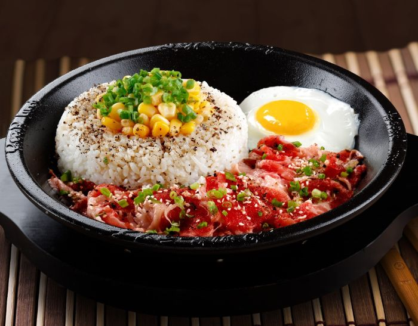

Pepper Lunch (Serves 4)

Ingredients
- 4 tbsp. canola oil
- 1 large onion
- 4 cloves of garlic
- 4 cups of cooked white rice
- 1.5 pounds of ultra thin beef (Sukiyaki is best,
but thinly sliced frozen sirloin works too)
- 1 tsp. black pepper grounded
- 1 cup corn (Cooked fresh, frozen, canned, doesn't matter)
- 4 tsp. butter
- Green onions
Directions
- Peel and mince the garlic
- Finely dice the onions
- Heat the corn
- Heat a large pan on high and add your oil
- Once oil is heated, add onions and garlic. Cook till aromatic
- Add rice in the middle of the pan
- Add beef around the rice. Sprinkle black pepper on top of the
beef
- Add corn on top of the rice with a dab of butter on top of the corn/rice
- If you don't have a skillet for everyone, Precook all the ingredients
and then lay them all out of preheated plates.
- Garnish the plates with green onions, amakuchi, and karakuchi! Enjoy :]
- Edameme and Japanese pickles are very yummy side dishes for this